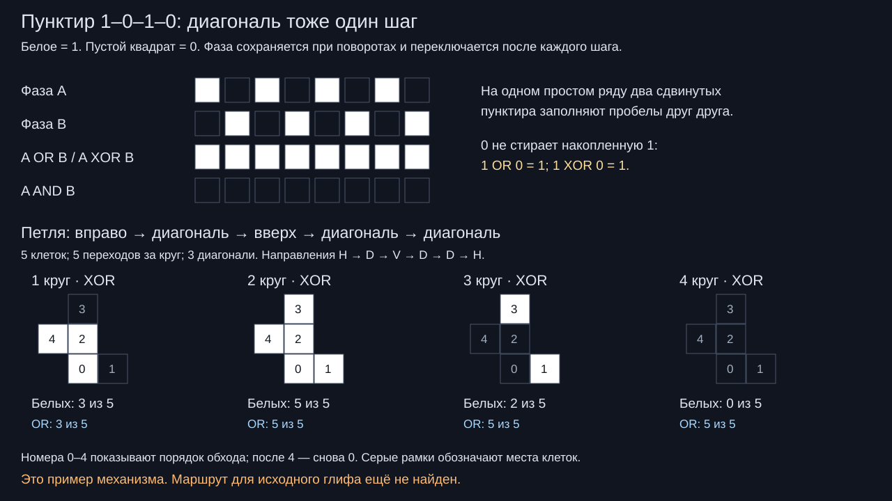

← Исследование глифов · Предыдущая модель непрерывной обводки
13 ноября 2026 · 0.002 · гипотеза, проверенная на демонстрационной петле
Нить: квадрат — пусто — квадрат — пусто
Пользователь уточнил правило: каждый переход к следующей клетке — один шаг, включая диагональный. На шагах 0, 2, 4… квадрат белый; на 1, 3, 5… пустой. Направление может меняться с горизонтального на вертикальное и обратно через диагональный шаг. Пунктир не начинается заново на повороте.
Теперь физический ход продолжается через пустые места, а изображение составляют только светлые квадратные звенья. Поэтому прежний расчёт «сколько штрихов нужно для готовой обводки» не решает эту новую задачу. Пунктир допускает невидимые переходы, но они должны попасть на нужную фазу строго чередующегося ряда.

Появилась фаза
Нужно хранить положение клетки, направление и один бит фазы. После каждого перехода фаза ← 1 − фаза. При возвращении в ту же клетку через чётное число шагов фаза совпадает, через нечётное — меняется. Это позволяет вернуться в бывший пробел уже белым квадратом.
На квадратной решётке горизонтальный или вертикальный переход меняет шахматный цвет клетки, диагональный — сохраняет. Поэтому при любом возвращении число горизонтальных и вертикальных шагов в сумме чётно. Фаза при возвращении меняется тогда и только тогда, когда число диагональных шагов нечётно. Без диагоналей такой смены при возвращении не получить.
Рабочий пример с разрешёнными поворотами
Центры пяти клеток: (0,0) → (1,0) → (0,1) → (0,2) → (−1,1) → (0,0). Ось y направлена вверх. Направления: горизонталь → диагональ → вертикаль → диагональ → диагональ. Переход с последней диагонали на первую горизонталь тоже разрешён. Все пять клеток различны; петля не требует прямого поворота горизонталь–вертикаль.
Первый круг даёт 10101, следующий — 01010. Их OR и XOR заполняют все пять клеток. При накоплении XOR после следующих кругов число белых клеток равно 3 → 5 → 2 → 0; с OR — 3 → 5 → 5 → 5. Пересечение AND двух отдельных фаз здесь пусто. Петля повторно посещается; это не утверждение об однократном прохождении всей геометрии.
Каждый шаг записывает исходную клетку перед переходом. Возвращение в клетку 0 относится к следующему кругу: граница круга не добавляет лишнее посещение. Для сравнения фаз на прямом ряду и на этой простой петле каждая фаза рассматривается отдельно. На произвольном самоналоженном маршруте результат нужно считать по всем посещениям каждой клетки.
Пусто не означает стереть
Если пустой шаг — это значение 0, то он не стирает уже накопленный белый квадрат ни при OR, ни при XOR: 1 OR 0 = 1, 1 XOR 0 = 1. Стирание произойдёт от второй белой записи при XOR. Присваивание текущего бита поверх старого — другое правило: оно действительно может стереть единицу нулём.
Что ещё не установлено
Уточнение пользователя: единица рисует заполненный квадрат. Продолжение: найден маршрут присланного глифа и 56 маршрутов в наборе 19 × 4. Все глифы клеточные; новый поиск выполнен на решётке с шагом вдвое мельче прежней восстановленной осевой решётки. Пример выше по-прежнему объясняет только чередование и фазу. Генератор исходного видео не установлен.
Если диагональный переход считать по геометрической длине, а не одним шагом, получится другая модель: длина такого перехода равна √2 стороны клетки. В этом разборе используется прямо подтверждённый пользователем счёт по шагам.
Схема SVG · Данные и проверки · Воспроизвести расчёт · Предыдущая проба пользователя с двумя линиями


Проверены соседство клеток, пять различных положений, направления и замыкание, отсутствие прямого H↔V, три диагонали и четыре результата накопления. Запуск: python dashed-thread.py; сторонние пакеты не нужны.